Từ một bản brief đến 5 KOC hợp thương hiệu, trong ngân sách.
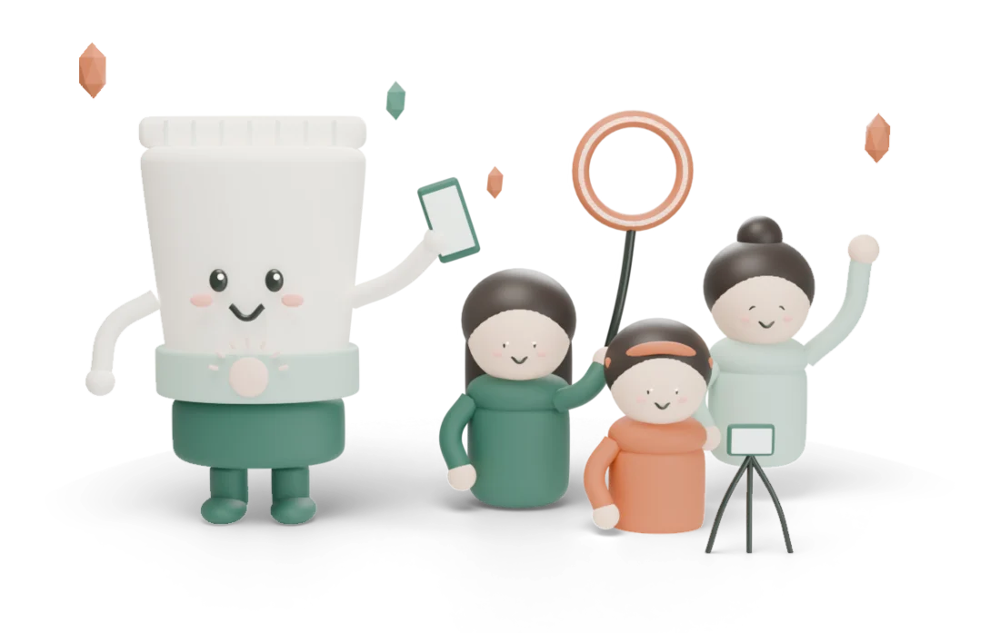
1Kem chống nắng, ngân sách 30.000.000 đ. Dùng 28.500.000 đ.
Sản phẩm, ngân sách, khán giả. Có thể loại KOC đã đề xuất lần trước.
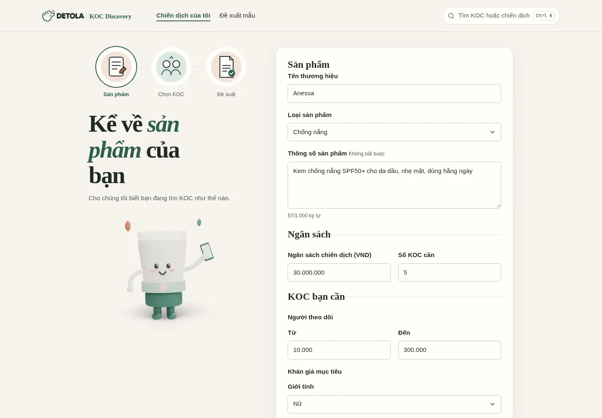
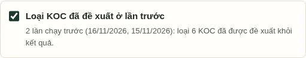
5 KOC, 28.500.000 / 30.000.000 đ.
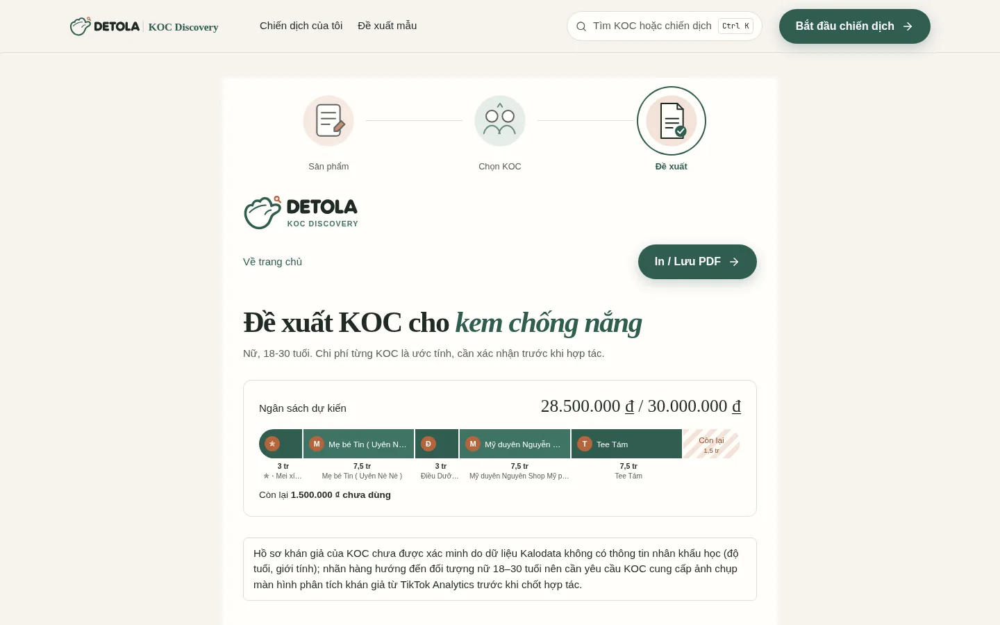
4Thương mại 45%, khán giả 20%, nội dung 35%.
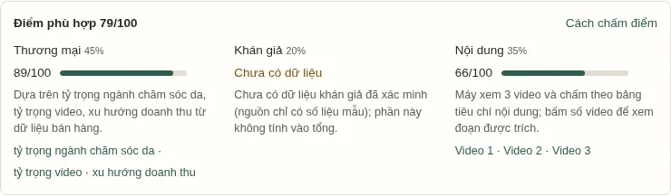
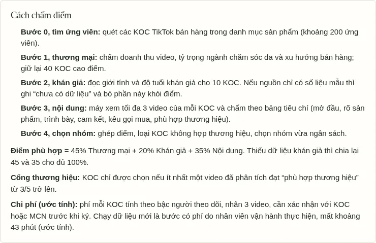
Mọi video dưới 3/5 về độ hợp thương hiệu.
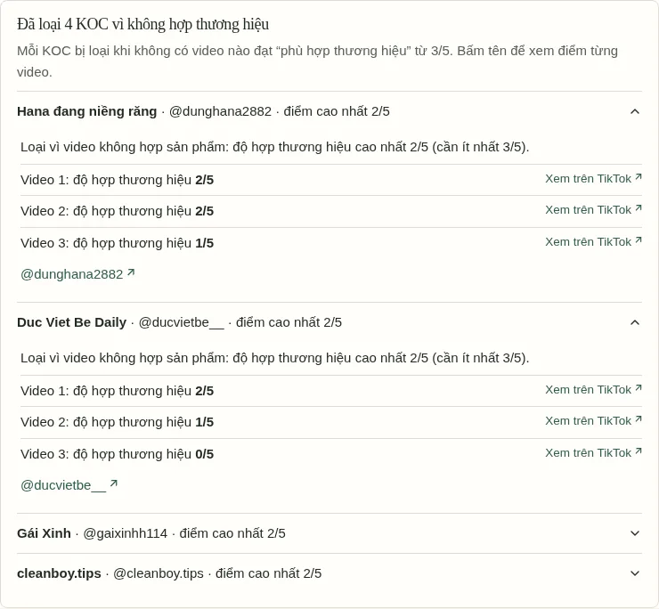
6Mỗi lý do trỏ tới khung hình hoặc lời nói trong video.
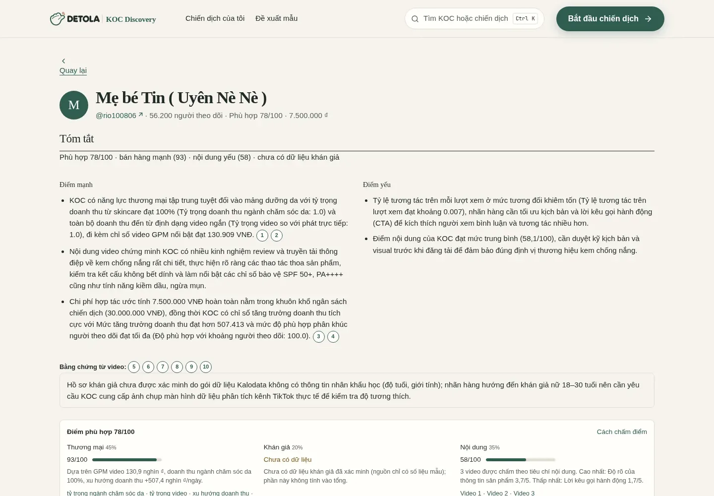
7Theo follower, giá mỗi video, điểm.
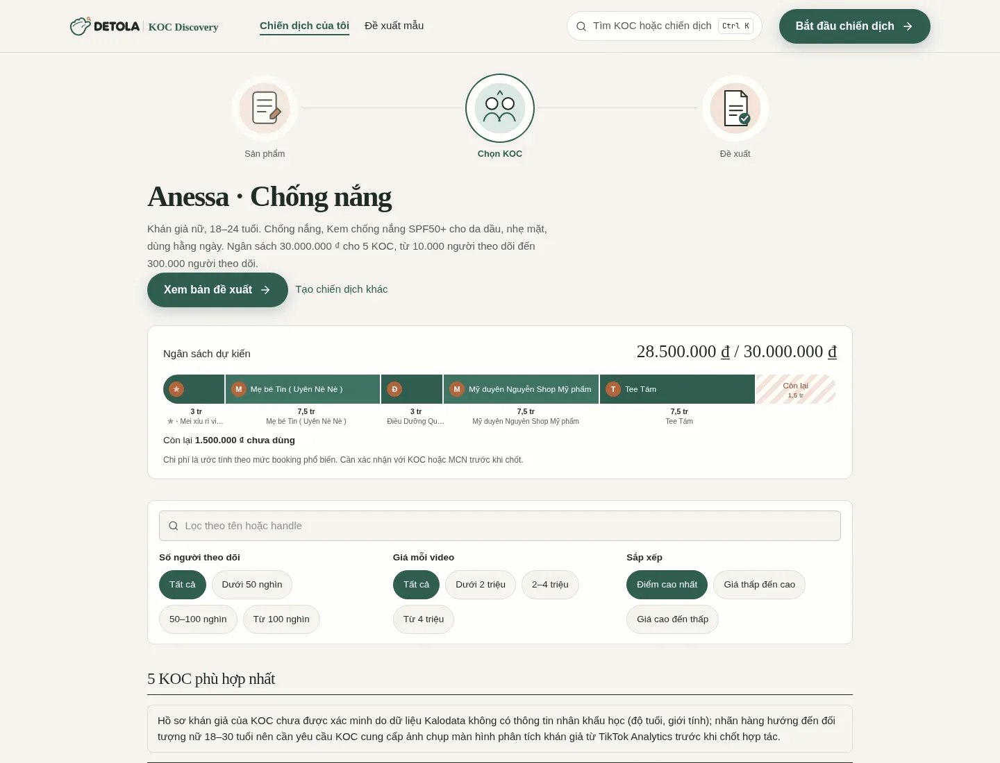
8"rio" ra ngay @rio100806.
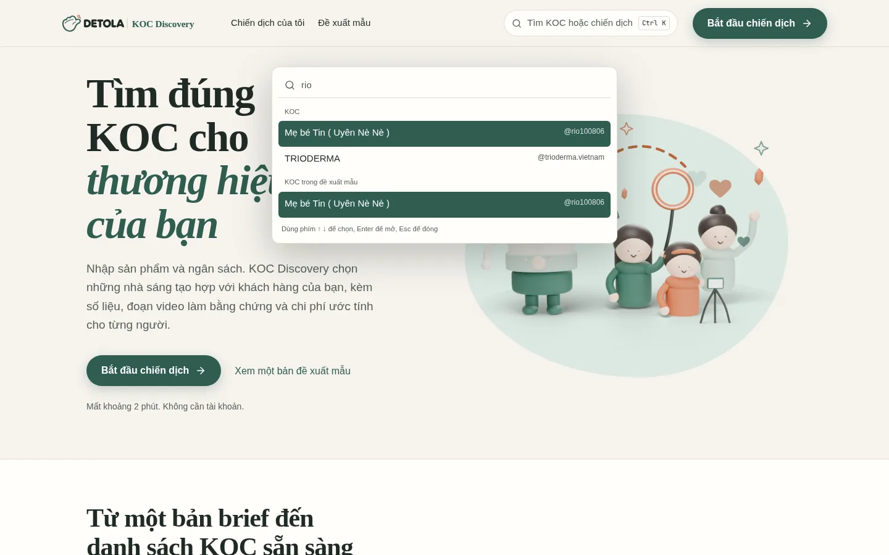
9Đề xuất, hồ sơ, bộ lọc dạng ngăn kéo.
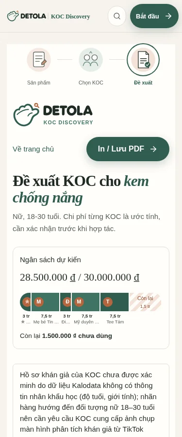
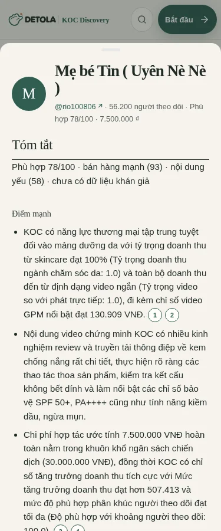
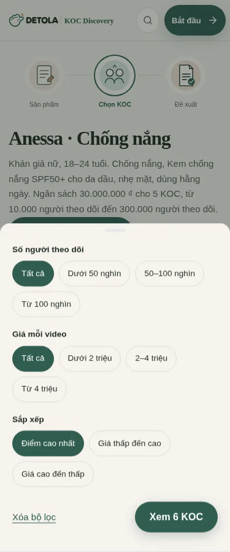
Chạy lại chỉ tốn 6,5 credit và 0,28 USD.
Không gộp nhánh nào khi chưa ĐẠT.
0 báo động nhầm trên 1.346 tiêu đề và trích dẫn thật.
AI đọc video đúng. Người chọn KOC theo độ tuổi, phong cách Gen Z: hệ thống chưa đo, cần thêm tiêu chí hợp khán giả.
| Cách chọn | KOC trúng | nDCG@5 | Mô hình |
|---|---|---|---|
| A. Chỉ số liệu bán hàng4 phút, không AI | 2/5 | 0,77 | 0 USD |
| B. Hiện tại: AI xem video43 phút | 1/5 | 0,59 | 0,43 USD |
| C. B + điểm chân dunggiữ cổng hợp thương hiệu | 1/5 | 0,54 | ≤ 0,71 USD |
| C'. Cổng mềmtham khảo: luật đặt sau khi chấm | 2/5 | 0,73 | ≤ 0,71 USD |
Chân dung KOC (tuổi, phong cách, cách xưng hô) khớp người chấm nhất, 0,009 USD mỗi video. Cổng "video phải nói về kem chống nắng" là nút thắt. Chưa đổi luật mặc định: mới có 1 brief, 1 người chấm.
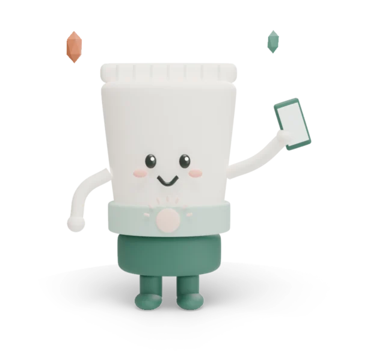